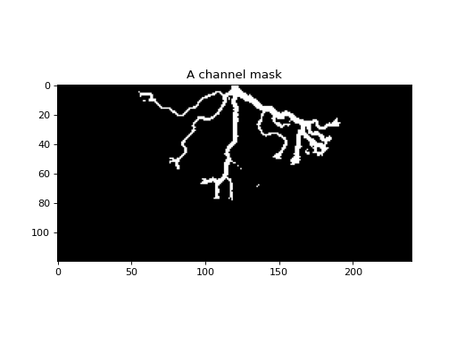

deltametrics.mask.ChannelMask¶
-
class
deltametrics.mask.ChannelMask(arr, is_mask=False)¶ Channel mask.
A channel mask object, helps enforce valid masking of channels.
Examples
- Initialize the channel mask
>>> cmsk = dm.mask.ChannelMask(arr)
- And visualize the mask:
>>> cmsk.show_mask()
-
__init__(arr, is_mask=False)¶ Initialize the ChannelMask.
Intializing the channel mask requires an array of data, should be two-dimensional.
- Parameters
arr (ndarray) – The data array to make the mask from.
routine (str) – Which routine to use to extract the mask.
is_mask (bool, optional) – Whether the data in
arris already a binary mask. For example, this should be set to True, if you have already binarized the data yourself, using custom routines, and want to just store the data in the ChannelMask object.
Methods
__init__(arr[, is_mask])Initialize the ChannelMask.
This is a wrapper to the below function.
a_method()Does something?
show(**kwargs)Show the mask.
Attributes
Values of the mask object.
Who knows!
Time when the mask is from.
-
a_channel_function()¶ This is a wrapper to the below function.
-
a_method()¶ Does something?
-
data¶ Values of the mask object.
In setter, we should sanitize the inputs (enforce range 0-1) and convert everything to uints for speed and size.
- Type
ndarray
-
property_for_just_channels¶ Who knows!
-
show(**kwargs)¶ Show the mask.
Passes **kwargs to
matplotlib.imshow.
-
time¶ Time when the mask is from.
- Type
float
{kind=link}
{kind=link}